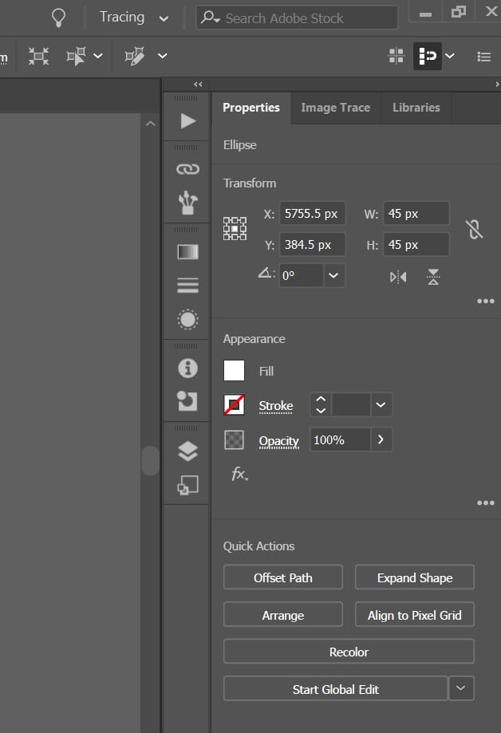

Illustrator is a editing software offered by Adobe. It mostly used for making vector pictures.
Vector graphics points, lines, traditional protection, and shape-based creative products mean they avoid designs where they are sectored to exact size or spread across the width of a billboard. They are told to express their images through lines, correct designing, and shape. The Pen tool allows for creating and embedding anchor points for designs essential to crafting custom shapes and paths. The Curvature tool is a clean, friendly way to create smooth, laborious lines and complex shapes. Illustrator supports variable weight to precisely customize typography in an easy way so that people can easily understand it and show their experiences.
The Brush Panel offers different types of brushes, linear sector arts, and painterly effects that add textures and styles. Drop shadows are used to add depth and dimension. Global 3D effects and appearances are included so people can easily understand and visualize their projects. The Enhanced Pre-Grade Ding Manual Tool adds shielding and highlights to craft projects by creating a mission that can be customized for smooth realism and preferred shading.
Illustrator is used in vector graphic powerhouses, press drawing, shape tools, artboards, document setups, creative brushes and effects, designing for UI and web graphics. It is also utilized in 3D tools, development, dimensions, and advanced masking techniques.
19 Feb 1990
14 Oct 2024 / 29.9